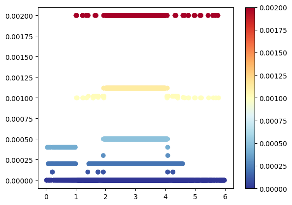
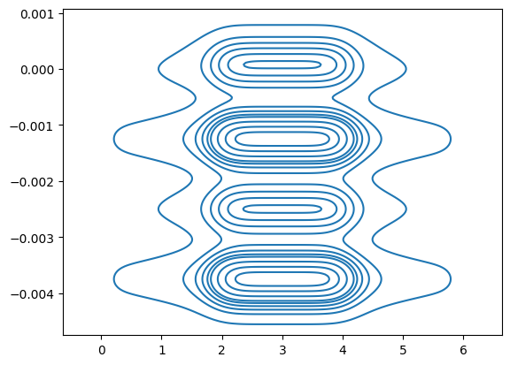
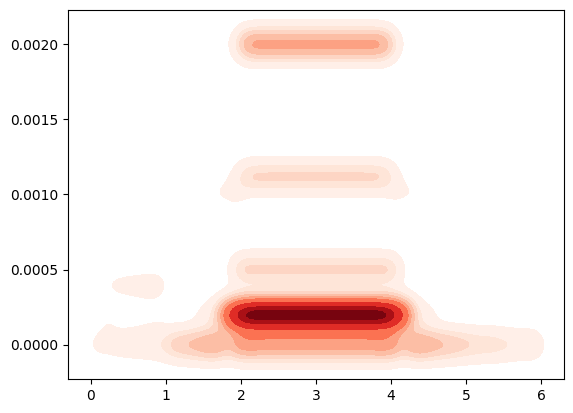
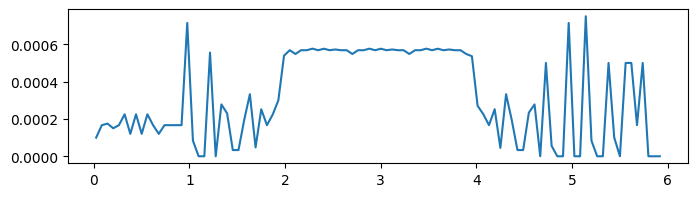
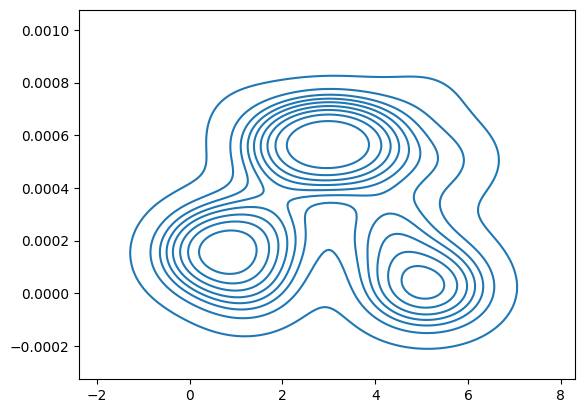

Post-process CZM simulation result#
import pandas as pd
import numpy as np
from matplotlib import pyplot as plt
import matplotlib
import matplotlib.image as mpimg
import seaborn as sns
import math
from scipy.stats import binned_statistic
import warnings
warnings.filterwarnings('ignore')
# read elemental nodal information
cz_ele_info = pd.read_csv('czm_post/cz_ele_info.txt', header=None)
cz_index = cz_ele_info[0].to_numpy()
cz_ele_info = cz_ele_info.set_index([0])
bulk_ele_info = pd.read_csv('czm_post/bulk_ele_info.txt', header=None)
bulk_index = bulk_ele_info[0].to_numpy()
bulk_ele_info = bulk_ele_info.set_index([0])
node_info = pd.read_csv('czm_post/node_info.txt', header=None)
# read field output
cz_stress = pd.read_fwf('czm_post/czm_MaxPrincipalStress.rpt', sep=' ', skiprows=7, header=None)
node_displacement = pd.read_csv('czm_post/cz_coat_830B_bend90_20stiff.csv')
# Clean displacement data (log format to datasheet format)
# # index
num_cz = cz_ele_info.shape[0]
num_bulk = bulk_ele_info.shape[0]
num_node = node_info.shape[0]
num_step = cz_stress.shape[0]
---------------------------------------------------------------------------
FileNotFoundError Traceback (most recent call last)
Cell In[2], line 2
1 # read elemental nodal information
----> 2 cz_ele_info = pd.read_csv('czm_post/cz_ele_info.txt', header=None)
3 cz_index = cz_ele_info[0].to_numpy()
4 cz_ele_info = cz_ele_info.set_index([0])
File ~\OneDrive - PPG Industries, Inc\Github\pyppg-handbook\venv\Lib\site-packages\pandas\io\parsers\readers.py:912, in read_csv(filepath_or_buffer, sep, delimiter, header, names, index_col, usecols, dtype, engine, converters, true_values, false_values, skipinitialspace, skiprows, skipfooter, nrows, na_values, keep_default_na, na_filter, verbose, skip_blank_lines, parse_dates, infer_datetime_format, keep_date_col, date_parser, date_format, dayfirst, cache_dates, iterator, chunksize, compression, thousands, decimal, lineterminator, quotechar, quoting, doublequote, escapechar, comment, encoding, encoding_errors, dialect, on_bad_lines, delim_whitespace, low_memory, memory_map, float_precision, storage_options, dtype_backend)
899 kwds_defaults = _refine_defaults_read(
900 dialect,
901 delimiter,
(...)
908 dtype_backend=dtype_backend,
909 )
910 kwds.update(kwds_defaults)
--> 912 return _read(filepath_or_buffer, kwds)
File ~\OneDrive - PPG Industries, Inc\Github\pyppg-handbook\venv\Lib\site-packages\pandas\io\parsers\readers.py:577, in _read(filepath_or_buffer, kwds)
574 _validate_names(kwds.get("names", None))
576 # Create the parser.
--> 577 parser = TextFileReader(filepath_or_buffer, **kwds)
579 if chunksize or iterator:
580 return parser
File ~\OneDrive - PPG Industries, Inc\Github\pyppg-handbook\venv\Lib\site-packages\pandas\io\parsers\readers.py:1407, in TextFileReader.__init__(self, f, engine, **kwds)
1404 self.options["has_index_names"] = kwds["has_index_names"]
1406 self.handles: IOHandles | None = None
-> 1407 self._engine = self._make_engine(f, self.engine)
File ~\OneDrive - PPG Industries, Inc\Github\pyppg-handbook\venv\Lib\site-packages\pandas\io\parsers\readers.py:1661, in TextFileReader._make_engine(self, f, engine)
1659 if "b" not in mode:
1660 mode += "b"
-> 1661 self.handles = get_handle(
1662 f,
1663 mode,
1664 encoding=self.options.get("encoding", None),
1665 compression=self.options.get("compression", None),
1666 memory_map=self.options.get("memory_map", False),
1667 is_text=is_text,
1668 errors=self.options.get("encoding_errors", "strict"),
1669 storage_options=self.options.get("storage_options", None),
1670 )
1671 assert self.handles is not None
1672 f = self.handles.handle
File ~\OneDrive - PPG Industries, Inc\Github\pyppg-handbook\venv\Lib\site-packages\pandas\io\common.py:859, in get_handle(path_or_buf, mode, encoding, compression, memory_map, is_text, errors, storage_options)
854 elif isinstance(handle, str):
855 # Check whether the filename is to be opened in binary mode.
856 # Binary mode does not support 'encoding' and 'newline'.
857 if ioargs.encoding and "b" not in ioargs.mode:
858 # Encoding
--> 859 handle = open(
860 handle,
861 ioargs.mode,
862 encoding=ioargs.encoding,
863 errors=errors,
864 newline="",
865 )
866 else:
867 # Binary mode
868 handle = open(handle, ioargs.mode)
FileNotFoundError: [Errno 2] No such file or directory: 'czm_post/cz_ele_info.txt'
Extract nodal displacement information#
(Uncomment it if dealing with new data. Re-run takes 20min)#
# prepare for nodal loop
temp_df = node_displacement.loc[node_displacement[' Node Label'] == 1]
num_frame = temp_df.shape[1]
num_frame = 1001
used_node = node_displacement[' Node Label'].unique()
# claim space to store u1, u2, x, and y info
nu1 = pd.DataFrame()
nu2 = pd.DataFrame()
nx = pd.DataFrame()
ny = pd.DataFrame()
# select data
for i in range(0, len(used_node)):
select_df = node_displacement.loc[node_displacement[' Node Label'] == used_node[i]]
select_df.reset_index(inplace=True)
node_name = used_node[i]
nu1[node_name] = select_df[' U-U1']
nu2[node_name] = select_df[' U-U2']
nx[node_name] = select_df['X']
ny[node_name] = select_df['Y']
nu1.to_csv('czm_post/830B_bend90_20stiff_nu1_output.csv', float_format='%.4f', index=False)
nu2.to_csv('czm_post/830B_bend90_20stiff_nu2_output.csv', float_format='%.4f', index=False)
nx.to_csv('czm_post/830B_bend90_20stiff_nx_output.csv', float_format='%.4f', index=False)
ny.to_csv('czm_post/830B_bend90_20stiff_ny_output.csv', float_format='%.4f', index=False)
;
nu1 = pd.read_csv('czm_post/830B_bend90_20stiff_nu1_output.csv')
nu2 = pd.read_csv('czm_post/830B_bend90_20stiff_nu2_output.csv')
nx = pd.read_csv('czm_post/830B_bend90_20stiff_nx_output.csv')
ny = pd.read_csv('czm_post/830B_bend90_20stiff_ny_output.csv')
# Calculate the x coordinates (center) of each cz_ele
# thickness of each cz_ele (measure opening)
cz_center = np.empty([num_cz, 2])
cz_delta = np.empty([num_cz, 1001])
cz_delta_final = np.empty([num_cz])
cz_delta_beginning = np.empty([num_cz])
for i in range(0, num_cz):
cz_i = cz_index[i]
# for each cz, average the x coord of its four nodes
ct_x_b = 0
ct_y_b = 0
ct_x_t = 0
ct_y_t = 0
ct_x_b = nx[str(cz_ele_info[1][cz_i])].iloc[-1] + nx[str(cz_ele_info[2][cz_i])].iloc[-1]
ct_y_b = ny[str(cz_ele_info[1][cz_i])].iloc[-1] + ny[str(cz_ele_info[2][cz_i])].iloc[-1]
ct_x_t = nx[str(cz_ele_info[3][cz_i])].iloc[-1] + nx[str(cz_ele_info[4][cz_i])].iloc[-1]
ct_y_t = ny[str(cz_ele_info[3][cz_i])].iloc[-1] + ny[str(cz_ele_info[4][cz_i])].iloc[-1]
cz_delta_final[i] = math.dist([ct_x_b, ct_y_b], [ct_x_t, ct_y_t])
cz_center[i, 0] = (ct_x_b + ct_x_t) / 4
cz_center[i, 1] = (ct_y_b + ct_y_t) / 4
# Plot miles per gallon against horsepower with other semantics
sns.relplot(x=cz_center[:, 0], y=cz_delta_final)
<seaborn.axisgrid.FacetGrid at 0x297efd7b010>
cm = plt.cm.get_cmap('RdYlBu_r')
sc = plt.scatter(cz_center[:, 0], cz_delta_final, c=cz_delta_final, cmap=cm)
plt.colorbar(sc)
plt.show()

# Basic 2D density plot
sns.kdeplot(x=cz_center[:, 0], y=cz_center[:, 1])
plt.show()

# Basic 2D density plot
sns.kdeplot(x=cz_center[:, 0], y=cz_center[:, 1], cmap="Reds", shade=True, bw_adjust=.5)
plt.show()

# Basic 2D density plot
sns.kdeplot(x=cz_center[:, 0], y=cz_delta_final, cmap="Reds", shade=True, bw_adjust=.5)
plt.show()

df_temp = pd.DataFrame(dict(x=cz_center[:, 0], y=cz_center[:, 1], intensity=cz_delta_final))
cz_open_map = df_temp.pivot(index = 'y', columns='x', values='intensity')
sns.heatmap(cz_open_map, annot=False)
plt.axis('off')
# plt.show()
(0.0, 2560.0, 12.0, 0.0)
cz_temp = df_temp
cz_temp.sort_values(by=['x'])
| x | y | intensity | |
|---|---|---|---|
| 1249 | 0.02515 | -0.00125 | 0.0000 |
| 5497 | 0.02515 | 0.00000 | 0.0000 |
| 1248 | 0.02515 | -0.00375 | 0.0000 |
| 1247 | 0.02515 | -0.00250 | 0.0000 |
| 1244 | 0.05030 | -0.00375 | 0.0004 |
| ... | ... | ... | ... |
| 619 | 5.95000 | -0.00125 | 0.0000 |
| 624 | 5.97500 | -0.00375 | 0.0000 |
| 623 | 5.97500 | -0.00125 | 0.0000 |
| 622 | 5.97500 | -0.00250 | 0.0000 |
| 5372 | 5.97500 | 0.00000 | 0.0000 |
6298 rows 3 columns
# Compute average crack opening
fig_open = plt.figure(figsize = (8, 2))
mean_stat = binned_statistic(cz_center[:, 0], cz_delta_final, statistic='mean', bins=100)
plt.plot( mean_stat.bin_edges[0:-1], mean_stat.statistic)
cz_open_860D = pd.DataFrame(dict(bin=mean_stat.bin_edges[0:-1], open=mean_stat.statistic))
cz_open_860D.to_csv('czm_post/cz_open_830B.csv', index=False)
# for i in range(0, 6, 0.05):
# cz_cell = cz_temp.loc[cz_temp['x'] >= i & cz_temp['x'] < i+0.05]

sns.kdeplot(x=mean_stat.bin_edges[0:-1], y=mean_stat.statistic)
plt.show()

mean_stat.bin_edges
array([0.02515 , 0.0846485, 0.144147 , 0.2036455, 0.263144 , 0.3226425,
0.382141 , 0.4416395, 0.501138 , 0.5606365, 0.620135 , 0.6796335,
0.739132 , 0.7986305, 0.858129 , 0.9176275, 0.977126 , 1.0366245,
1.096123 , 1.1556215, 1.21512 , 1.2746185, 1.334117 , 1.3936155,
1.453114 , 1.5126125, 1.572111 , 1.6316095, 1.691108 , 1.7506065,
1.810105 , 1.8696035, 1.929102 , 1.9886005, 2.048099 , 2.1075975,
2.167096 , 2.2265945, 2.286093 , 2.3455915, 2.40509 , 2.4645885,
2.524087 , 2.5835855, 2.643084 , 2.7025825, 2.762081 , 2.8215795,
2.881078 , 2.9405765, 3.000075 , 3.0595735, 3.119072 , 3.1785705,
3.238069 , 3.2975675, 3.357066 , 3.4165645, 3.476063 , 3.5355615,
3.59506 , 3.6545585, 3.714057 , 3.7735555, 3.833054 , 3.8925525,
3.952051 , 4.0115495, 4.071048 , 4.1305465, 4.190045 , 4.2495435,
4.309042 , 4.3685405, 4.428039 , 4.4875375, 4.547036 , 4.6065345,
4.666033 , 4.7255315, 4.78503 , 4.8445285, 4.904027 , 4.9635255,
5.023024 , 5.0825225, 5.142021 , 5.2015195, 5.261018 , 5.3205165,
5.380015 , 5.4395135, 5.499012 , 5.5585105, 5.618009 , 5.6775075,
5.737006 , 5.7965045, 5.856003 , 5.9155015, 5.975 ])
# df_temp = node_displacement.groupby(" Node Label")
# df_temp.reset_index()
# node_displacement.groupby(" Node Label", group_keys=True)
# print(df_temp)
node_displacement.columns.values
array(['ODB Name', 'Step', 'Frame', 'Part Instance Name', ' Node Label',
'X', 'Y', 'Z', 'Section Name', 'Material Name', 'Section Point',
' U-U1', ' U-U2'], dtype=object)